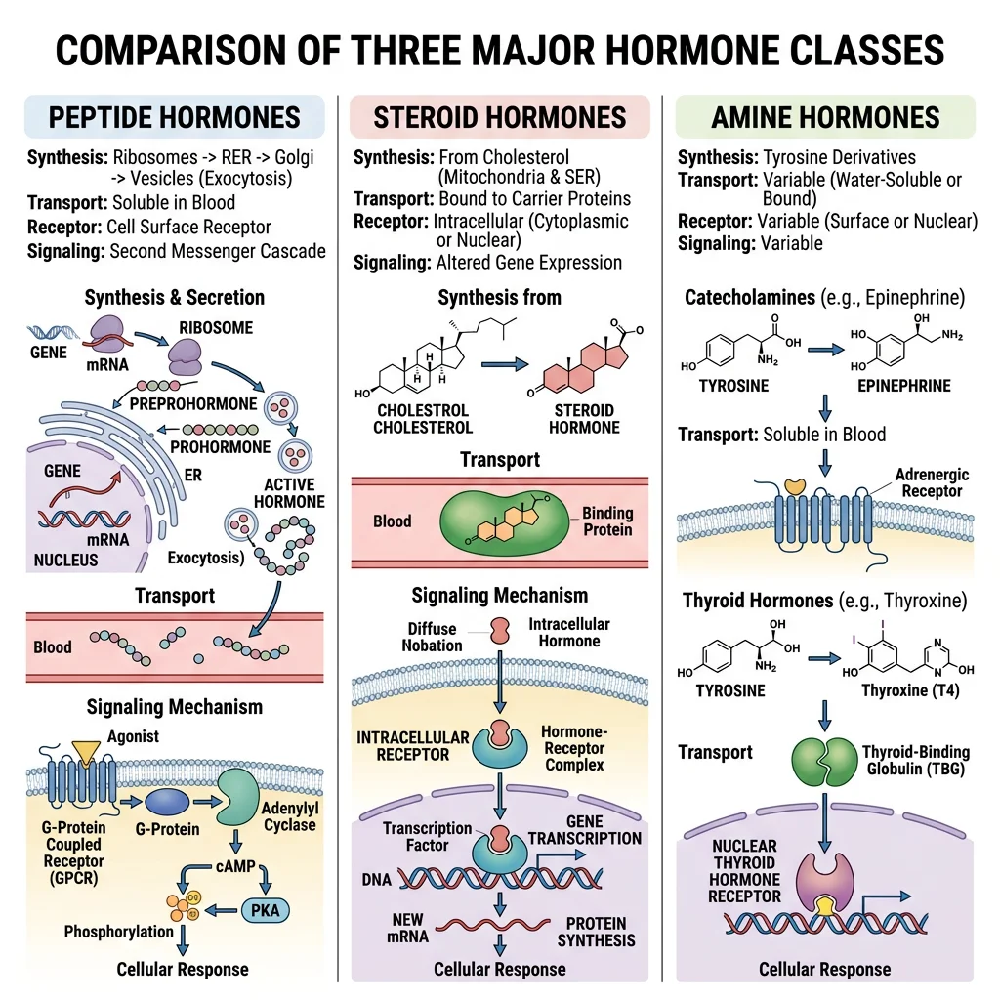
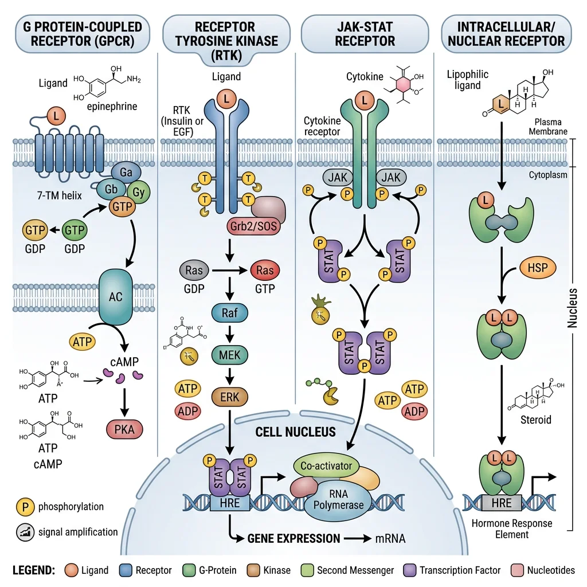
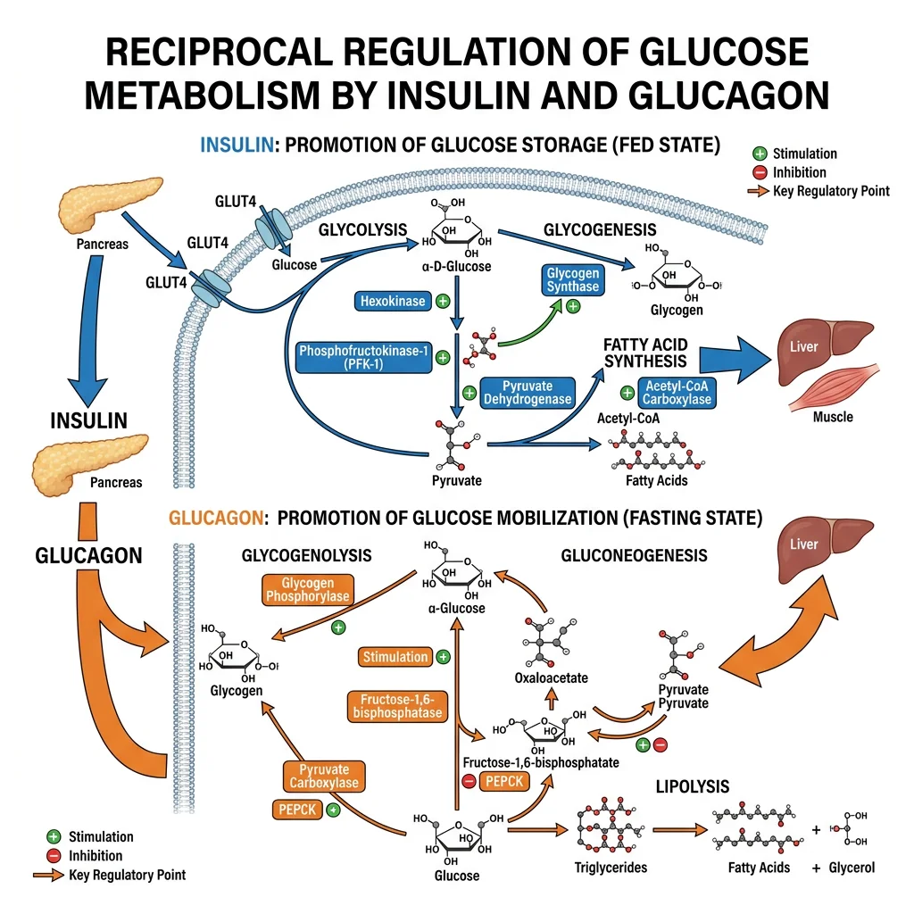
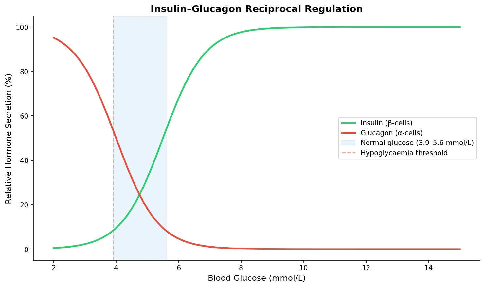
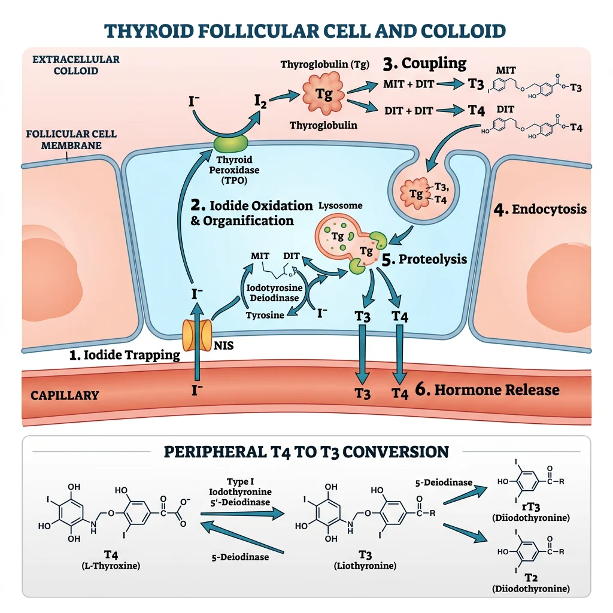
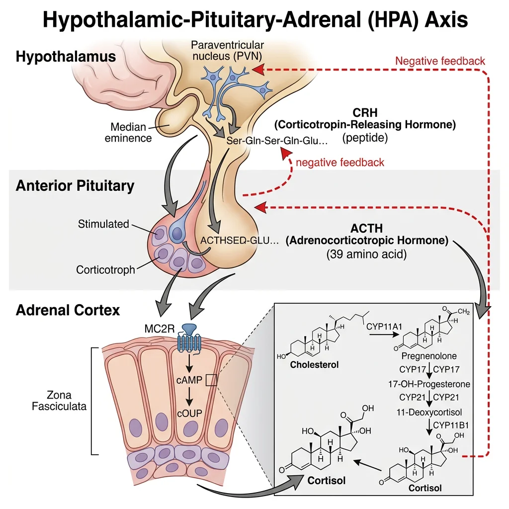

Biochemistry Mastery
Biological Chemistry Fundamentals
Atoms, bonds, functional groups, thermodynamicsWater, pH & Biological Buffers
Water polarity, pH, Henderson-Hasselbalch, blood buffersAmino Acids & Protein Structure
Amino acid classes, peptide bonds, protein foldingEnzymes & Catalysis
Kinetics, Michaelis-Menten, inhibition, regulationCarbohydrates & Lipids
Sugars, glycogen, fatty acids, cholesterol, membranesMetabolism & Bioenergetics
ATP, glycolysis, gluconeogenesis, redox carriersCitric Acid Cycle & Oxidative Phosphorylation
Acetyl-CoA, ETC, ATP synthase, oxygen dependenceSignal Transduction & Cell Communication
GPCRs, kinases, calcium, hormone cascadesNucleic Acids & Gene Expression
DNA, replication, transcription, translation, epigeneticsBrain & Nervous System Biochemistry
Neurotransmitters, ion gradients, myelin, neurodegenerationHeart & Muscle Biochemistry
Cardiac metabolism, actin-myosin, energy systemsLiver Biochemistry
Glucose homeostasis, detox, urea cycle, bileKidney Biochemistry & Acid-Base
pH regulation, ion transport, hormonal functionsEndocrine System Biochemistry
Hormone classes, signaling, glucose & stress controlDigestive System Biochemistry
Gastric acid, enzymes, bile, absorption, microbiomeImmune System Biochemistry
Antibodies, cytokines, complement, oxidative burstAdipose Tissue & Energy Balance
Triglycerides, lipolysis, leptin, obesityTissue-Specific Metabolism
Fed vs fasting, organ fuel selection, starvationMolecular Basis of Disease
Diabetes, cancer metabolism, neurodegenerationClinical Biochemistry & Diagnostics
Blood tests, liver/kidney markers, lipid panelsHormone Classification
Hormones are chemical messengers synthesised by endocrine glands and released into the bloodstream to act on distant target cells. Despite enormous structural diversity, all hormones fall into three chemical classes — peptide/protein, steroid, and amine — and understanding which class a hormone belongs to immediately tells you how it is synthesised, transported, stored, and how it signals at its target.

| Feature | Peptide/Protein Hormones | Steroid Hormones | Amine Hormones |
|---|---|---|---|
| Precursor | Amino acids (gene → mRNA → preprohormone → prohormone → hormone) | Cholesterol (enzymatic modifications by CYP enzymes) | Tyrosine (catecholamines) or tyrosine + iodine (thyroid hormones) |
| Water solubility | Hydrophilic — dissolve freely in blood | Hydrophobic — require carrier proteins (CBG, SHBG, albumin) | Mixed — catecholamines hydrophilic; thyroid hormones hydrophobic (need TBG) |
| Storage | Pre-formed in secretory granules — released by exocytosis | NOT stored — synthesised on demand from cholesterol | Catecholamines: stored in chromaffin granules. Thyroid: stored as thyroglobulin in colloid |
| Receptor location | Cell surface (cannot cross membrane) | Intracellular/nuclear (cross membrane freely) | Catecholamines: cell surface. Thyroid: intracellular nuclear |
| Onset & Duration | Fast onset (seconds–minutes), short-lived | Slow onset (hours–days), long duration | Catecholamines: very fast. Thyroid: slow |
| Examples | Insulin, glucagon, GH, ADH, PTH, prolactin | Cortisol, aldosterone, testosterone, estrogen, progesterone, vitamin D | Adrenaline, noradrenaline, dopamine, T3, T4 |
Peptide Hormones
Peptide hormones are the largest class. They are synthesised via the standard gene expression pathway — transcription produces mRNA, translation on rough ER yields a preprohormone (with signal peptide), which is processed to a prohormone (signal peptide cleaved), then further cleaved to the active hormone and stored in secretory vesicles.
Prohormone Processing — Insulin as the Model
- Preproinsulin (110 aa): Synthesised in β-cell rough ER → signal peptide cleaved → proinsulin
- Proinsulin (86 aa): Folds in ER, forms 3 disulphide bonds (A6-A11, A7-B7, A20-B19). Packaged into Golgi secretory granules
- Cleavage: Prohormone convertases PC1/3 and PC2 + carboxypeptidase E remove the C-peptide (connecting peptide, 31 aa)
- Mature insulin: A-chain (21 aa) + B-chain (30 aa) linked by disulphide bonds. Stored with zinc as hexameric crystals in granules
- Clinical utility of C-peptide: Equimolar secretion with insulin → measure C-peptide to assess endogenous insulin production (unaffected by exogenous insulin administration). Low C-peptide = Type 1 DM; high C-peptide = Type 2 DM with insulin resistance
Steroid Hormones
All steroid hormones derive from cholesterol through a series of CYP450 enzyme modifications. The first committed step is always the same: cholesterol is transported to the inner mitochondrial membrane by StAR protein (Steroidogenic Acute Regulatory protein), where CYP11A1 (P450scc = side-chain cleavage) converts it to pregnenolone.
Steroid Synthesis Pathways From Pregnenolone
- Pregnenolone → Progesterone: 3β-HSD (3β-hydroxysteroid dehydrogenase) — zona glomerulosa & zona fasciculata
- Progesterone → 11-Deoxycorticosterone → Corticosterone → Aldosterone: CYP21A2 → CYP11B1 → CYP11B2 (aldosterone synthase) — zona glomerulosa only
- Pregnenolone → 17-OH-Pregnenolone → 17-OH-Progesterone → 11-Deoxycortisol → Cortisol: CYP17A1 → 3β-HSD → CYP21A2 → CYP11B1 — zona fasciculata
- 17-OH-Pregnenolone → DHEA → Androstenedione → Testosterone: CYP17A1 (17,20-lyase) → 3β-HSD → 17β-HSD — zona reticularis → gonads
- Testosterone → Estradiol: CYP19A1 (aromatase) — ovarian granulosa cells, placenta, adipose tissue
- Testosterone → DHT: 5α-reductase — prostate, skin, hair follicles (DHT is 3× more potent than testosterone at androgen receptors)
Clinical pearl: Congenital adrenal hyperplasia (CAH), most commonly caused by CYP21A2 deficiency, blocks cortisol and aldosterone synthesis → ACTH excess → adrenal androgen excess → virilisation of female newborns, salt-wasting crisis. Most common cause of ambiguous genitalia in 46,XX infants.
Amine Hormones
Amine hormones are derived from the amino acid tyrosine but divide into two functionally distinct groups with completely different signalling mechanisms:
Two Families From One Amino Acid
- Catecholamines (dopamine, noradrenaline, adrenaline): Synthesised in adrenal medulla chromaffin cells and sympathetic neurons. Pathway: Tyrosine → L-DOPA (tyrosine hydroxylase, rate-limiting) → Dopamine (DOPA decarboxylase) → Noradrenaline (dopamine β-hydroxylase) → Adrenaline (PNMT, phenylethanolamine N-methyltransferase — only in adrenal medulla, induced by cortisol from adjacent cortex). Behave like peptide hormones: water-soluble, act via cell-surface receptors (α₁, α₂, β₁, β₂, β₃ adrenergic receptors), fast onset
- Thyroid hormones (T3, T4): Synthesised in thyroid follicular cells from tyrosine residues on thyroglobulin, iodinated by thyroid peroxidase (TPO). Behave like steroid hormones: lipid-soluble, require carrier protein (TBG), act via intracellular nuclear receptors (TR-α, TR-β), slow genomic effects
- Key distinction: Although both derive from tyrosine, catecholamines are simple modifications (hydroxylation + decarboxylation + methylation) while thyroid hormones incorporate iodine and retain the phenol ring structure — making them lipophilic enough to cross membranes and bind nuclear receptors
Hormone Receptor Mechanisms
Hormones carry the message, but receptors decode it. The location of the receptor — cell surface or intracellular — determines the speed, duration, and nature of the cellular response. This distinction maps directly onto the chemical class of the hormone: hydrophilic hormones cannot cross the plasma membrane and must bind surface receptors, while lipophilic hormones diffuse inside and bind nuclear receptors.

Cell-Surface Receptors
Three major families of cell-surface receptors transduce hormone signals into intracellular second messengers:
| Receptor Type | Mechanism | Second Messengers | Hormone Examples |
|---|---|---|---|
| G-Protein Coupled Receptors (GPCRs) | 7-transmembrane domain → activates heterotrimeric G-protein (Gα-GDP → Gα-GTP) → effector enzyme | Gs: ↑adenylyl cyclase → ↑cAMP → PKA. Gi: ↓cAMP. Gq: ↑PLC → IP₃ + DAG → Ca²⁺ + PKC | Glucagon (Gs), ADH-V2 (Gs), adrenaline-β (Gs), adrenaline-α₁ (Gq), somatostatin (Gi), PTH (Gs) |
| Receptor Tyrosine Kinases (RTKs) | Ligand binding → dimerisation → auto-phosphorylation of tyrosine residues → recruitment of adaptor proteins (IRS, Grb2, SOS) | Ras/MAPK pathway (proliferation), PI3K/Akt pathway (metabolism, survival), JAK/STAT pathway | Insulin, IGF-1, EGF, PDGF, FGF |
| Cytokine Receptors (JAK-STAT) | Ligand binding → receptor dimerisation → JAK phosphorylation → STAT phosphorylation → STAT dimerises → nucleus | STAT transcription factors directly (no second messenger cascade) | GH, prolactin, erythropoietin (EPO), leptin, interferons, interleukins |
Signal Amplification — Why Hormones Work at Picomolar Concentrations
The GPCR → cAMP → PKA cascade exemplifies signal amplification at every step:
- 1 hormone molecule binds 1 GPCR → activates 1 Gs-protein
- 1 Gs-protein activates adenylyl cyclase for ~10 seconds → produces ~100 cAMP molecules
- Each cAMP activates PKA (4 molecules bind per PKA holoenzyme → releasing 2 catalytic subunits)
- Each PKA catalytic subunit phosphorylates ~10 substrate proteins per second
- If the substrate is a kinase (e.g., phosphorylase kinase), each phosphorylates ~100 glycogen phosphorylase molecules
- Net amplification: 1 adrenaline molecule → millions of glucose molecules released from glycogen in seconds
Intracellular Receptors
Lipophilic hormones (steroids, thyroid hormones, vitamin D, retinoids) cross the plasma membrane and bind intracellular/nuclear receptors that belong to the nuclear receptor superfamily — ligand-activated transcription factors.
Nuclear Receptor Mechanism
- Domain structure: All nuclear receptors share: (A/B) N-terminal activation domain (AF-1) → (C) DNA-binding domain (zinc fingers) → (D) hinge region → (E) ligand-binding domain (LBD + AF-2) → (F) C-terminal
- Steroid receptors (cortisol, aldosterone, testosterone, estrogen, progesterone): Reside in the cytoplasm bound to heat shock proteins (HSP90, HSP70). Hormone binding → HSP dissociation → receptor dimerisation → nuclear translocation → binds hormone response element (HRE) on DNA → recruits coactivators (SRC/p160 family) → gene transcription activated or repressed
- Thyroid/vitamin D/retinoic acid receptors: Already located in the nucleus, bound to DNA as heterodimers with RXR (retinoid X receptor). Without ligand, they recruit corepressors (NCoR, SMRT) and HDACs → gene silencing. Hormone binding → corepressor release → coactivator recruitment → transcription activation
- Onset & duration: Genomic effects take hours to days (require transcription + translation) but produce sustained changes in cell phenotype. This contrasts with the seconds-to-minutes response of cell-surface receptor signalling
SERMs and Nuclear Receptor Pharmacology
Selective Estrogen Receptor Modulators (SERMs) demonstrate how one ligand can produce opposite effects in different tissues by recruiting different coactivator/corepressor complexes:
- Tamoxifen: ERα antagonist in breast (blocks estrogen-driven proliferation → breast cancer treatment) but ERα agonist in uterus (increases endometrial cancer risk) and agonist in bone (preserves density)
- Raloxifene: ERα antagonist in breast AND uterus (no endometrial risk) but agonist in bone → osteoporosis prevention
- Mechanism: Different tissues express different coactivator/corepressor ratios. When tamoxifen binds ERα, the receptor adopts a conformation that exposes AF-1 (tissue-dependent coactivator recruitment) but blocks AF-2 in some tissues → tissue-selective gene activation/repression. This concept underlies all "selective receptor modulators" — SARMs (androgen), SPRMs (progesterone), etc.
Insulin & Glucagon Signaling
Insulin and glucagon are the master regulators of blood glucose, secreted by pancreatic islet β-cells and α-cells respectively. They represent opposing arms of glucose homeostasis: insulin is the hormone of feast (anabolic — storage), while glucagon is the hormone of famine (catabolic — mobilisation). Their signalling pathways are among the most clinically important in all of biochemistry.

Insulin Signaling Cascade
Insulin Signaling — From Receptor to GLUT4
- Glucose sensing: Glucose enters β-cells via GLUT2 (low affinity, high capacity) → glucokinase (hexokinase IV, Km ~10 mM = glucose sensor) phosphorylates glucose → glycolysis → ↑ATP/ADP ratio
- Insulin secretion: ↑ATP → closes K-ATP channels (SUR1/Kir6.2) → membrane depolarisation → opens voltage-gated Ca²⁺ channels → Ca²⁺ influx → insulin granule exocytosis. Sulfonylureas (glibenclamide) close K-ATP channels pharmacologically → ↑insulin secretion
- Receptor binding: Insulin binds the insulin receptor (IR) — a preformed α₂β₂ receptor tyrosine kinase. Binding → conformational change → β-subunit kinase activation → trans-autophosphorylation of tyrosine residues
- IRS recruitment: Phospho-IR recruits Insulin Receptor Substrate (IRS-1/2) → IRS phosphorylated on multiple tyrosine residues → becomes a docking platform
- PI3K/Akt pathway: Phospho-IRS binds PI3K (p85 regulatory + p110 catalytic) → converts PIP₂ → PIP₃ in the membrane → recruits PDK1 and Akt/PKB → PDK1 phosphorylates Akt → Akt activates
- GLUT4 translocation: Active Akt phosphorylates AS160 (TBC1D4) → releases GLUT4 storage vesicles from intracellular retention → GLUT4 inserted into plasma membrane → glucose uptake into muscle and adipose tissue ↑20-fold
- Metabolic effects: Akt also: activates glycogen synthase (via GSK3β inhibition), activates mTORC1 (protein synthesis), inhibits FOXO transcription factors (↓gluconeogenesis gene expression), activates lipogenesis (SREBP-1c)
Insulin Resistance — The Molecular Defect in Type 2 Diabetes
- Serine phosphorylation of IRS-1: Inflammatory cytokines (TNF-α, IL-6 from visceral adipose tissue) and lipid intermediates (diacylglycerol, ceramides) activate JNK and IKKβ kinases → phosphorylate IRS-1 on serine residues (instead of tyrosine) → blocks PI3K binding → impaired GLUT4 translocation
- ER stress: Chronic nutrient excess → unfolded protein response in ER → activates JNK → further IRS-1 serine phosphorylation
- Lipotoxicity: Ectopic fat accumulation in muscle and liver → intramyocellular lipids → DAG activates PKCθ (muscle) and PKCε (liver) → impair insulin receptor signalling
- Compensatory hyperinsulinaemia: β-cells initially increase insulin output 5–10× → maintains normoglycaemia for years. Eventually β-cell failure occurs (glucotoxicity, lipotoxicity, amyloid deposition from IAPP) → hyperglycaemia → clinical diabetes
Glucagon Signaling Cascade
Glucagon — The Counter-Regulatory Hormone
- Secretion trigger: Low blood glucose (<3.9 mmol/L) → α-cell depolarisation → glucagon release. Also stimulated by amino acids (protein meal), sympathetic nervous system (stress), cortisol, and gut hormones. Inhibited by insulin, somatostatin, GLP-1, and high glucose
- Receptor: Glucagon receptor (GCGR) — Class B GPCR on hepatocytes → couples to Gs → adenylyl cyclase → ↑cAMP → PKA activation
- Glycogenolysis: PKA → phosphorylase kinase → glycogen phosphorylase a (activated) → glycogen breakdown → glucose-1-phosphate → glucose-6-phosphate → free glucose (G6Pase, liver only) → blood
- Gluconeogenesis: PKA → phosphorylates CREB (cAMP response element-binding protein) → ↑transcription of PEPCK and G6Pase genes → ↑hepatic glucose output. PKA also phosphorylates PFK-2/FBPase-2 → ↓fructose-2,6-bisphosphate → relieves PFK-1 activation → ↓glycolysis, ↑gluconeogenesis
- Inhibits lipogenesis: Glucagon phosphorylates ACC (acetyl-CoA carboxylase) → inactivation → ↓malonyl-CoA → ↑β-oxidation (CPT-1 uninhibited) + ↓fatty acid synthesis
- Ketogenesis: When glucagon:insulin ratio is very high (starvation, DKA), hepatic fatty acid oxidation → excess acetyl-CoA → ketone body production (HMG-CoA synthase activation)
import numpy as np
import matplotlib.pyplot as plt
# Insulin vs glucagon — reciprocal regulation across blood glucose range
glucose = np.linspace(2, 15, 100) # mmol/L
# Sigmoid models for hormone secretion
insulin = 100 / (1 + np.exp(-1.5 * (glucose - 5.5)))
glucagon = 100 / (1 + np.exp(1.5 * (glucose - 4.0)))
fig, ax = plt.subplots(figsize=(10, 6))
ax.plot(glucose, insulin, color='#2ecc71', linewidth=2.5, label='Insulin (β-cells)')
ax.plot(glucose, glucagon, color='#e74c3c', linewidth=2.5, label='Glucagon (α-cells)')
ax.axvspan(3.9, 5.6, alpha=0.1, color='#3498db', label='Normal glucose (3.9–5.6 mmol/L)')
ax.axvline(x=3.9, color='#e74c3c', linestyle='--', alpha=0.5, label='Hypoglycaemia threshold')
ax.set_xlabel('Blood Glucose (mmol/L)', fontsize=12)
ax.set_ylabel('Relative Hormone Secretion (%)', fontsize=12)
ax.set_title('Insulin–Glucagon Reciprocal Regulation', fontsize=14, fontweight='bold')
ax.legend(fontsize=10)
ax.spines['top'].set_visible(False)
ax.spines['right'].set_visible(False)
plt.tight_layout()
plt.show()

Thyroid Hormone Biochemistry
Thyroid hormones are unique: derived from tyrosine but incorporating iodine atoms, they are the only hormones that require a dietary trace element for synthesis. T3 and T4 regulate basal metabolic rate in virtually every cell in the body, making thyroid function among the most commonly tested clinical parameters.

Thyroid Hormone Synthesis
Thyroid Hormone Synthesis — 6 Steps
- Iodide trapping: NIS (Na⁺/I⁻ symporter) on the basolateral membrane of thyroid follicular cells actively transports I⁻ from blood → 30–40× concentration gradient. TSH upregulates NIS expression
- Iodide transport to colloid: Pendrin (Cl⁻/I⁻ exchanger) transports I⁻ across the apical membrane into the follicular lumen (colloid)
- Oxidation & organification: Thyroid peroxidase (TPO) oxidises I⁻ → I⁰ using H₂O₂ (generated by DUOX2/ThOX2) → iodine is attached to tyrosine residues on thyroglobulin (Tg) → forms MIT (monoiodotyrosine) and DIT (diiodotyrosine)
- Coupling reaction: TPO catalyses coupling: DIT + DIT → T4 (thyroxine); MIT + DIT → T3 (triiodothyronine). Both remain covalently attached to thyroglobulin and are stored as colloid (weeks-to-months supply)
- Endocytosis & proteolysis: TSH stimulates pinocytosis of Tg-bound T4/T3 → lysosomal proteases cleave T3 and T4 from thyroglobulin → released into blood. Uncoupled MIT/DIT are deiodinated by DEHAL1 → iodine recycled
- Peripheral conversion: Most T4 is converted to active T3 (or inactive rT3) in peripheral tissues by deiodinases: D1 (liver, kidney — T4→T3), D2 (brain, pituitary, BAT — local T3 supply), D3 (placenta, brain — T4→rT3, inactivation). T4:T3 secretion ratio from thyroid is ~20:1, but T3 is 5× more biologically active
Thyroid Pharmacology Targets
- Thionamides (carbimazole → methimazole, propylthiouracil/PTU): Inhibit TPO → block organification and coupling. PTU additionally inhibits peripheral D1 deiodinase (T4→T3) — preferred in thyroid storm and first trimester pregnancy
- Potassium iodide (Lugol's solution): High-dose iodide temporarily blocks thyroid hormone release via the Wolff-Chaikoff effect (acute excess I⁻ → inhibits organification). Used pre-operatively and in thyroid storm
- Radioactive iodine (¹³¹I): Concentrated by NIS → β-particle emission destroys follicular cells. Definitive treatment for Graves' disease. Contraindicated in pregnancy
- Levothyroxine (T4 replacement): Standard treatment for hypothyroidism. Long half-life (~7 days) → stable daily dosing. Converted to T3 peripherally by deiodinases
Metabolic Actions
T3 — The Metabolic Thermostat
T3 enters cells, binds nuclear thyroid receptors (TRα/TRβ-RXR heterodimers) on thyroid response elements (TREs) → activates gene transcription. Major metabolic effects:
- ↑ Basal metabolic rate: ↑Na⁺/K⁺-ATPase expression in all tissues → ↑ATP consumption → ↑O₂ consumption → ↑heat production (calorigenic effect). This single mechanism accounts for ~40% of T3's metabolic effect
- Carbohydrate metabolism: ↑intestinal glucose absorption, ↑glycogenolysis, ↑gluconeogenesis, ↑GLUT4 expression → can worsen glycaemic control in diabetes
- Lipid metabolism: ↑LDL receptor expression (↑LDL clearance → ↓LDL cholesterol). In hypothyroidism: ↓LDL receptors → hypercholesterolaemia. Also ↑lipolysis, ↑fatty acid oxidation
- Cardiac effects: ↑β₁-adrenergic receptor expression → ↑HR, ↑contractility, ↑cardiac output. T3 directly ↑MHC-α (fast myosin) gene expression. Hyperthyroidism: tachycardia, AF, high-output heart failure
- Growth & development: Essential for CNS development (myelination, synaptogenesis). Congenital hypothyroidism → cretinism (intellectual disability, short stature) if untreated in first 2 years of life → universal neonatal screening (heel-prick TSH test)
- Bone: T3 ↑osteoblast and osteoclast activity → net ↑bone turnover. Chronic excess → osteoporosis
Cortisol & Stress Response
Cortisol is the body's primary stress hormone, released from the adrenal cortex in response to physical or psychological stress. It ensures that glucose and energy substrates are available for the brain and muscles during "fight or flight," but chronic elevation causes devastating metabolic and immune consequences.

HPA Axis
The Hypothalamic-Pituitary-Adrenal (HPA) Axis
- Hypothalamus: Paraventricular nucleus neurons secrete CRH (corticotropin-releasing hormone) into the hypothalamic-hypophyseal portal system → anterior pituitary. CRH secretion follows a circadian rhythm: peak at 6–8 AM (cortisol awakening response), nadir at midnight. Stress overrides circadian rhythm
- Anterior pituitary: CRH binds CRH-R1 on corticotroph cells → ↑POMC (proopiomelanocortin) gene transcription → POMC processed by PC1/3 to ACTH (adrenocorticotropic hormone, 39 aa) + β-lipotropin + β-endorphin. ACTH released in pulses
- Adrenal cortex: ACTH binds MC2R (melanocortin-2 receptor, Gs-coupled GPCR) on zona fasciculata cells → ↑cAMP → PKA → ↑StAR protein expression → ↑cholesterol transport to inner mitochondrial membrane → ↑cortisol synthesis
- Negative feedback: Cortisol feeds back at three levels: (a) Hypothalamus — ↓CRH transcription; (b) Anterior pituitary — ↓POMC transcription and ↓ACTH secretion; (c) Hippocampus — GR-mediated suppression of HPA drive. This feedback operates on fast (minutes, non-genomic — membrane GR) and slow (hours, genomic) timescales
Cortisol Metabolic Effects
| Target System | Cortisol Effect | Mechanism |
|---|---|---|
| Glucose | ↑ Blood glucose (diabetogenic) | ↑Gluconeogenesis (↑PEPCK, G6Pase gene transcription), ↓GLUT4 expression (peripheral insulin resistance), ↑amino acid mobilisation for gluconeogenesis |
| Protein | ↑ Protein catabolism (except liver) | Activates ubiquitin-proteasome pathway in muscle → amino acids released → liver gluconeogenesis. Causes muscle wasting, thin skin, striae in Cushing's |
| Lipid | ↑ Lipolysis (limbs), ↑ lipogenesis (trunk/face) | Permissive effect for catecholamine-induced lipolysis. Central adiposity from insulin resistance + direct lipogenic effects in visceral adipose → "buffalo hump," "moon face" |
| Immune | Immunosuppression & anti-inflammation | ↓NF-κB activation (↑IκBα transcription), ↓COX-2, ↓cytokine production (IL-1, IL-6, TNF-α), ↓T-cell proliferation, ↑neutrophil demargination (↑WBC count but ↓function), lymphocyte apoptosis |
| Bone | ↓ Bone formation, ↑ resorption | ↓Osteoblast activity (↓OPG, ↑RANKL), ↓intestinal Ca²⁺ absorption, ↓renal Ca²⁺ reabsorption → secondary hyperparathyroidism → osteoporosis (most common cause of drug-induced osteoporosis) |
| CNS | ↑ Alertness (acute), depression/cognitive impairment (chronic) | Acute: enhances hippocampal function. Chronic excess: hippocampal dendritic atrophy → memory impairment, ↑amygdala reactivity → anxiety. Chronic deficiency: fatigue, confusion |
Cushing's Syndrome vs Addison's Disease — Biochemical Diagnosis
- Cushing's syndrome (cortisol excess): Central obesity, moon face, buffalo hump, purple striae, proximal myopathy, hypertension, hyperglycaemia, osteoporosis. Biochemical diagnosis: (1) 24-hour urinary free cortisol ↑; (2) Late-night salivary cortisol ↑ (loss of circadian nadir); (3) Overnight dexamethasone suppression test — low-dose (1 mg) dexamethasone fails to suppress morning cortisol (>50 nmol/L). Localisation: ↓ACTH = adrenal tumour; ↑ACTH + fails to suppress with high-dose (8 mg) dex = ectopic ACTH (lung cancer); ↑ACTH + suppresses with high-dose dex = pituitary Cushing's (Cushing's disease)
- Addison's disease (primary adrenal insufficiency): Autoimmune destruction of adrenal cortex → ↓cortisol, ↓aldosterone, ↑ACTH. Features: hyperpigmentation (ACTH cross-reacts with MC1R on melanocytes), fatigue, weight loss, postural hypotension, hyperkalaemia, hyponatraemia, hypoglycaemia. Diagnosis: short Synacthen (ACTH stimulation) test — cortisol fails to rise (<550 nmol/L at 30 min). Treatment: hydrocortisone + fludrocortisone (mineralocorticoid replacement) + stress-dose glucocorticoids during illness
Reproductive Hormones
Reproductive hormones are steroid hormones synthesised from cholesterol via the same pathways described earlier. They are regulated by the hypothalamic-pituitary-gonadal (HPG) axis: GnRH (hypothalamus) → FSH + LH (anterior pituitary) → gonadal steroids → negative (and sometimes positive) feedback.
Estrogen & Progesterone
Estrogen Biochemistry
- Three main estrogens: Estradiol (E2, most potent — premenopausal), estrone (E1 — postmenopausal, from adipose aromatase), estriol (E3 — pregnancy, from placental metabolism of fetal DHEA-S)
- Synthesis: In ovarian granulosa cells, FSH induces aromatase (CYP19A1) expression → converts androstenedione (from theca cells, LH-driven) to estradiol. This is the "two-cell, two-gonadotrophin" model: theca cells (LH → androgens) + granulosa cells (FSH → estrogens)
- Receptor signalling: ERα (reproductive tissues, breast, bone) and ERβ (ovary, brain, cardiovascular). Both are nuclear receptors → bind estrogen response elements (EREs) → gene transcription. Also rapid non-genomic signalling via membrane-associated ER → PI3K/Akt, MAPK pathways
- Metabolic effects: ↑HDL, ↓LDL (cardiovascular protection in premenopausal women); ↑bone formation (↓osteoclast lifespan — estrogen withdrawal at menopause → rapid bone loss → postmenopausal osteoporosis); endometrial proliferation (proliferative phase of menstrual cycle); breast development (ductal growth)
- Positive feedback: Rising E2 levels from the dominant follicle, when sustained >200 pg/mL for >48 hours, switch from negative to positive feedback at the pituitary → triggers the LH surge → ovulation. One of the only examples of positive feedback in endocrinology
Progesterone — The Hormone of Pregnancy
- Source: Corpus luteum (after ovulation, LH-maintained), then placenta (takes over at ~8–10 weeks gestation — "luteo-placental shift")
- Receptor: Progesterone receptor (PR-A, PR-B) — nuclear receptor, requires prior estrogen priming (estrogen upregulates PR expression)
- Major actions: (1) Converts proliferative endometrium → secretory endometrium (glandular development for implantation); (2) Maintains pregnancy (↓uterine contractility, ↓prostaglandin synthesis); (3) Breast lobular-alveolar development; (4) ↑basal body temperature by 0.5°C (basis of temperature-based fertility tracking); (5) Respiratory stimulation (↑ventilation in pregnancy via central chemoreceptor sensitisation)
- Progesterone withdrawal → menstruation: If no implantation → corpus luteum regresses → ↓progesterone → spiral artery vasoconstriction → endometrial ischaemia → shedding
Testosterone
Testosterone — Synthesis, Action & Regulation
- Synthesis: Leydig cells (interstitial cells of testis), stimulated by LH. Pathway: Cholesterol → pregnenolone → DHEA → androstenedione → testosterone (17β-HSD). Most circulates bound to SHBG (60%) and albumin (38%); only 2% is free (biologically active)
- Peripheral conversion: Testosterone → DHT by 5α-reductase (prostate, skin — DHT is 3× more potent). Testosterone → estradiol by aromatase (adipose, bone — important for epiphyseal fusion and bone density in males). Obese males: ↑aromatase activity → ↑estradiol → gynaecomastia + ↓testosterone (negative feedback)
- Androgen receptor (AR): Nuclear receptor, binds androgen response elements (AREs). Actions: spermatogenesis (Sertoli cell support, requires both testosterone and FSH), sexual differentiation (male external genitalia by DHT, Wolffian duct by testosterone), muscle mass (↑protein synthesis), bone density, erythropoiesis (↑EPO), sebaceous gland activity, hair follicle stimulation (androgenetic alopecia — paradoxically DHT causes terminal-to-vellus conversion on scalp but stimulates body hair)
- Regulation: GnRH pulses (pulsatile is critical — continuous GnRH → receptor downregulation → ↓LH/FSH — basis of GnRH agonist therapy for prostate cancer) → LH → testosterone. FSH → Sertoli cells → inhibin B → selective negative feedback on FSH. Both testosterone and estradiol (aromatase-derived) provide negative feedback on GnRH and LH
Endocrine Disorders
Endocrine disorders illustrate how disruption at any level of a hormonal axis — gland, receptor, or feedback — produces predictable biochemical and clinical consequences. The hormone level patterns (elevated, normal, suppressed) combined with their regulatory hormones allow precise anatomical localisation of the defect.
Diabetes & Insulin Resistance
| Feature | Type 1 Diabetes | Type 2 Diabetes | Gestational DM |
|---|---|---|---|
| Pathophysiology | Autoimmune destruction of β-cells (T-cell mediated). Antibodies: anti-GAD65, anti-IA-2, anti-ZnT8, anti-insulin | Progressive insulin resistance (adipose → muscle → liver) + β-cell dysfunction (glucotoxicity, lipotoxicity, IAPP amyloid) | Placental hormones (hPL, progesterone, cortisol) → insulin resistance. Unmasked β-cell reserve inadequacy |
| Onset/Age | Usually childhood/adolescence (can be any age — LADA) | Usually >40 years (increasingly younger with obesity epidemic) | 2nd–3rd trimester, resolves post-partum (50% develop T2DM within 10 years) |
| Insulin level | ↓↓ (absolute deficiency). C-peptide: low/undetectable | ↑ initially (compensatory), then ↓ (β-cell failure). C-peptide: normal/high early, low late | ↑ (insufficient to overcome resistance) |
| DKA risk | High (no insulin → unopposed glucagon → ketogenesis) | Low (enough insulin to suppress ketogenesis). HHS more common (extreme hyperglycaemia, dehydration) | Low |
| Treatment | Insulin (mandatory — basal-bolus or pump) | Stepwise: lifestyle → metformin → SGLT2i/GLP-1 RA → insulin | Diet/exercise → insulin if inadequate (metformin in some guidelines) |
Modern Diabetes Pharmacology — Mechanisms
- Metformin: Activates AMPK (AMP-activated protein kinase) → ↓hepatic gluconeogenesis, ↑muscle glucose uptake, ↓mitochondrial Complex I → ↑AMP:ATP ratio. Also ↓intestinal glucose absorption, ↑GLP-1 secretion. Does NOT cause hypoglycaemia (doesn't stimulate insulin secretion). Risk: lactic acidosis (rare, in renal impairment)
- GLP-1 receptor agonists (semaglutide, liraglutide): Mimic incretin GLP-1 → glucose-dependent insulin secretion (↑only when glucose is high), ↓glucagon, ↓gastric emptying, ↓appetite (hypothalamic satiety centres). Significant weight loss (up to 15% body weight) + CV benefit
- SGLT2 inhibitors (empagliflozin, dapagliflozin): Block renal glucose reabsorption in PCT → glycosuria (80 g/day glucose lost in urine). Benefits independent of diabetes: ↓BP, ↓weight, cardio- and reno-protection. Now approved for heart failure and CKD even without diabetes
- DPP-4 inhibitors (sitagliptin): Block DPP-4 enzyme that degrades endogenous GLP-1/GIP → ↑incretin levels → glucose-dependent insulin secretion. Well-tolerated but less efficacious than GLP-1 RAs
Thyroid Disorders
| Disorder | Cause | TSH | T3/T4 | Key Biochemical Features |
|---|---|---|---|---|
| Graves' disease | TSH receptor-stimulating antibodies (TRAb) — autoimmune | ↓↓ (suppressed) | ↑↑ | Weight loss, tremor, heat intolerance, tachycardia/AF, exophthalmos, diffuse goitre, pretibial myxoedema. ↓Total cholesterol |
| Hashimoto's thyroiditis | Anti-TPO and anti-Tg antibodies → lymphocytic infiltration → gland destruction | ↑↑ | ↓ | Fatigue, weight gain, cold intolerance, constipation, bradycardia, dry skin. ↑Total cholesterol, ↑LDL, ↑CK, hyponatraemia (↓free water clearance) |
| Toxic multinodular goitre | Autonomous thyroid nodules (activating TSH receptor mutations) | ↓ | ↑ | Older patients, irregular goitre, no eye signs. Radioiodine scan: patchy uptake ("hot" nodules) |
| Secondary hypothyroidism | Pituitary failure (tumour, surgery, Sheehan's syndrome) | ↓ or normal (inappropriately) | ↓ | TSH is low/normal despite low T4 — pituitary cannot mount appropriate TSH response. Usually associated with other pituitary hormone deficiencies |
| Subclinical hypothyroidism | Early Hashimoto's, post-radioiodine, post-thyroidectomy | ↑ (mildly) | Normal | TSH 4.5–10 mIU/L with normal fT4. May progress to overt hypothyroidism (5% per year if anti-TPO positive). Treatment debated — treat if TSH >10 or symptomatic |
Practice Exercises
Exercise 1: A newborn female presents with ambiguous genitalia and hypotension. The 17-hydroxyprogesterone level is markedly elevated. Diagnose and explain the biochemical pathway disruption.
Diagnosis: Congenital Adrenal Hyperplasia (CAH) — CYP21A2 (21-hydroxylase) deficiency
CYP21A2 converts 17-OH-progesterone → 11-deoxycortisol (cortisol pathway) and progesterone → 11-deoxycorticosterone (aldosterone pathway). When blocked: (1) ↓Cortisol → loss of negative feedback → ↑ACTH → adrenal hyperplasia; (2) ↓Aldosterone → salt-wasting crisis (hyponatraemia, hyperkalaemia, hypotension — can be fatal in neonates); (3) Accumulated 17-OH-progesterone is shunted to the androgen pathway → ↑DHEA → ↑testosterone → virilisation of 46,XX female (ambiguous genitalia: clitoromegaly, labial fusion). The markedly elevated 17-OH-progesterone (often >100 nmol/L) is diagnostic — used in neonatal screening via heel-prick blood spot in many countries. Treatment: hydrocortisone (replaces cortisol, suppresses ACTH), fludrocortisone (replaces aldosterone), surgical correction if severe virilisation.
Exercise 2: Explain why a patient with Graves' disease has a suppressed TSH despite high T3/T4. How does this differ from TSH-secreting pituitary adenoma?
Answer: In Graves' disease, thyroid-stimulating immunoglobulins (TRAb/TSI) bind the TSH receptor on thyroid follicular cells, mimicking TSH → constitutive thyroid hormone production independent of pituitary control. The resulting high T3/T4 provides strong negative feedback at the hypothalamus (↓TRH) and anterior pituitary (↓TSH transcription) → TSH is suppressed to <0.01 mIU/L. The thyroid is autonomous — driven by antibodies, not TSH. In a TSH-secreting pituitary adenoma (TSHoma), the pituitary tumour secretes TSH autonomously, insensitive to negative feedback. Therefore, TSH is elevated or inappropriately normal despite high T3/T4. This pattern — high T4 + unsuppressed TSH — is called "inappropriate TSH secretion." Key differential: in Graves', TSH is low; in TSHoma, TSH is high or normal. Additional diagnostic clues: TRAb positive in Graves', α-subunit elevated in TSHoma, pituitary MRI shows adenoma in TSHoma.
Exercise 3: Trace the insulin signaling pathway from glucose entry into the β-cell to GLUT4 insertion in muscle. Identify three points where Type 2 DM disrupts this pathway.
Answer: Pathway: Glucose → GLUT2 → glucokinase → glycolysis → ↑ATP/ADP → K-ATP channel closure → depolarisation → Ca²⁺ influx → insulin exocytosis → circulation → insulin receptor (RTK) → autophosphorylation → IRS-1 Tyr-phosphorylation → PI3K → PIP₂→PIP₃ → PDK1 → Akt activation → AS160 phosphorylation → GLUT4 vesicle translocation → glucose uptake. Three disruption points in T2DM: (1) IRS-1 serine phosphorylation (by JNK/IKKβ from inflammatory cytokines TNF-α/IL-6 and lipid intermediates DAG/ceramides) → blocks PI3K binding; (2) ↓GLUT4 gene expression in muscle and adipose (chronic hyperinsulinaemia downregulates GLUT4 transcription); (3) β-cell failure — exhaustion from compensatory hyperinsulinaemia, glucotoxicity (↑ glucose → ↑ROS → β-cell apoptosis), lipotoxicity (free fatty acids → ceramides → β-cell apoptosis), IAPP (islet amyloid polypeptide) aggregation → amyloid deposits in islets. Together, these explain the progression from insulin resistance → compensatory hyperinsulinaemia → eventual β-cell failure → overt hyperglycaemia.
Exercise 4: A patient on long-term prednisolone (30 mg/day) abruptly stops medication and develops hypotension, hypoglycaemia, and collapse. Explain the biochemical mechanism.
Diagnosis: Acute adrenal crisis (secondary adrenal insufficiency)
Chronic exogenous glucocorticoid administration suppresses the HPA axis at all three levels: (1) ↓CRH release from hypothalamus; (2) ↓ACTH transcription and secretion from corticotrophs; (3) Adrenal cortex atrophy (zona fasciculata cells shrink without ACTH stimulation — ACTH is a trophic factor). The adrenal glands can take 6–12 months to recover full cortisol-producing capacity after prolonged suppression. When prednisolone is abruptly withdrawn, the patient cannot mount an adequate cortisol response → adrenal crisis: ↓cortisol → ↓gluconeogenesis → hypoglycaemia; ↓vascular tone (cortisol is permissive for catecholamine vasoconstriction) → hypotension → cardiovascular collapse. Unlike primary Addison's, aldosterone is typically preserved (RAAS, not ACTH, is the major aldosterone regulator), so hyperkalaemia is less common. Treatment: immediate IV hydrocortisone 100 mg bolus, IV fluids. Prevention: always taper glucocorticoids gradually, never stop abruptly. Patients should carry a steroid emergency card.
Exercise 5: Compare the mechanism of action of GLP-1 receptor agonists (semaglutide) vs DPP-4 inhibitors (sitagliptin). Why do GLP-1 RAs produce greater weight loss and HbA1c reduction?
Answer: Both drugs enhance the incretin system but at different levels: (1) DPP-4 inhibitors (sitagliptin) block the enzyme DPP-4 that degrades endogenous GLP-1 and GIP → double native GLP-1 levels from ~10 pmol/L to ~20 pmol/L. This produces modest glucose-dependent insulin secretion and glucagon suppression, but the absolute GLP-1 levels achieved are relatively low → HbA1c reduction ~0.5–0.8%, minimal weight effect. (2) GLP-1 receptor agonists (semaglutide) are synthetic GLP-1 analogues resistant to DPP-4 degradation → achieve pharmacological GLP-1 levels 5–10× above physiological → much stronger receptor activation. This produces: (a) greater insulin secretion and glucagon suppression (HbA1c reduction ~1.5–2%); (b) significant delay in gastric emptying (nausea, early satiety — tolerance develops); (c) direct hypothalamic appetite suppression (POMC neuron activation, NPY/AgRP inhibition in arcuate nucleus) → reduced food intake → 10–15% weight loss; (d) demonstrated cardiovascular benefit (SUSTAIN-6, LEADER trials) — mechanism may involve ↓inflammation, ↓atherosclerosis. The key difference is pharmacological vs physiological GLP-1 levels — DPP-4 inhibitors merely preserve what the body makes, while GLP-1 RAs provide supraphysiological doses.
Endocrine Biochemistry Worksheet
Use this interactive worksheet to consolidate your understanding of hormone signalling, endocrine axes, and clinical disorders. Download your completed analysis as a Word, Excel, or PDF document.
Endocrine System Study Sheet
Complete the fields below to create a personalised endocrine biochemistry summary. Download as Word, Excel, or PDF.
Conclusion & Next Steps
The endocrine system orchestrates whole-body homeostasis through three classes of hormones acting via two fundamental receptor mechanisms — cell-surface and intracellular. From the exquisite glucose-sensing machinery of pancreatic β-cells to the multi-layered HPA axis with its circadian rhythm and negative feedback, endocrine biochemistry demonstrates how molecular precision translates into physiological control.
Understanding these pathways is directly clinically applicable: insulin resistance in Type 2 diabetes, thyroid function testing, dexamethasone suppression tests, and the pharmacology of GLP-1 agonists all emerge directly from the biochemistry covered here. In Part 15, we turn to the digestive system — the gateway through which nutrients enter the body and the site where gut hormones like GLP-1 are first produced, linking digestion intimately with the endocrine regulation we've just explored.